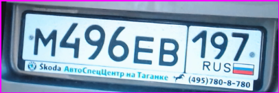
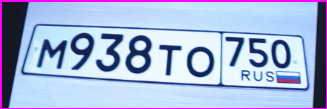
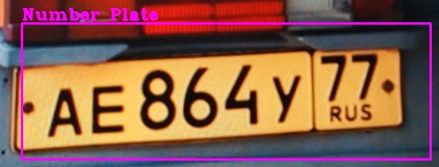

RAKIB RARY
import cv2
#############################################
frameWidth = 640
frameHeight = 480
nPlateCascade = cv2.CascadeClassifier("Resources/haarcascades/haarcascade_russian_plate_number.xml")
minArea = 200
color = (255,0,255)
###############################################
cap = cv2.VideoCapture(0)
count = 0
while True:
success, img = cap.read()
imgGray = cv2.cvtColor(img, cv2.COLOR_BGR2GRAY)
numberPlates = nPlateCascade.detectMultiScale(imgGray, 1.1, 10)
for (x, y, w, h) in numberPlates:
area = w*h
if area >minArea:
cv2.rectangle(img, (x, y), (x + w, y + h), (255, 0, 255), 2)
cv2.putText(img,"Number Plate",(x,y-5),
cv2.FONT_HERSHEY_COMPLEX_SMALL,1,color,2)
imgRoi = img[y:y+h,x:x+w]
cv2.imshow("ROI", imgRoi)
cv2.imshow("Result", img)
if cv2.waitKey(1) & 0xFF == ord('s'):
cv2.imwrite("Resources/Scanned/NoPlate_"+str(count)+".jpg",imgRoi)
cv2.rectangle(img,(0,200),(640,300),(0,255,0),cv2.FILLED)
cv2.putText(img,"Scan Saved",(150,265),cv2.FONT_HERSHEY_DUPLEX,
2,(0,0,255),2)
cv2.imshow("Result",img)
cv2.waitKey(500)
count +=1


